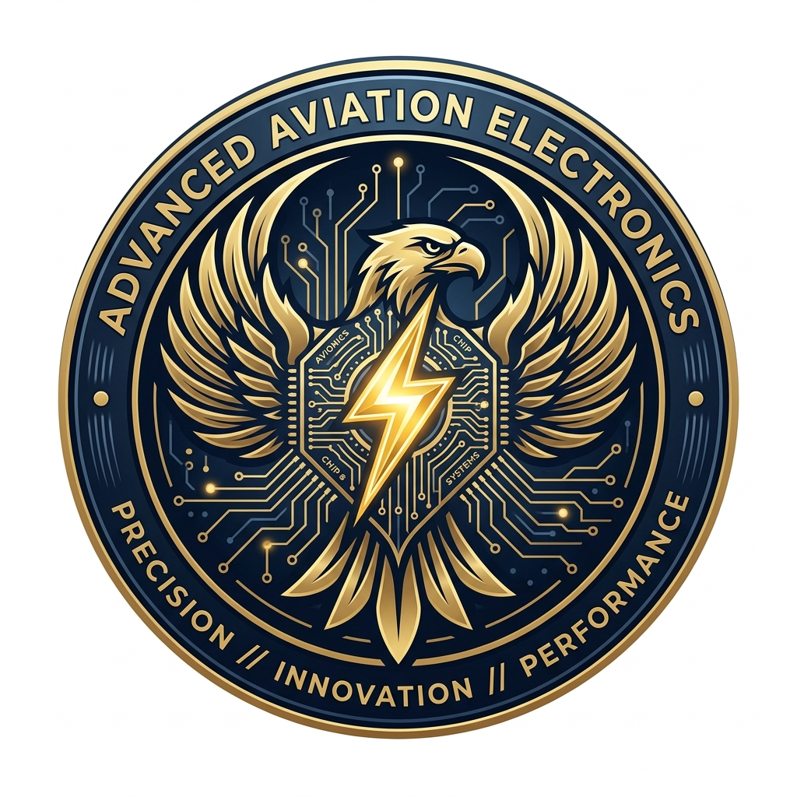

참되고! 슬기롭고! 씩씩하게!
졸업과 동시에 전원 공군 기술 부사관(하사)으로 임관합니다.
입학금, 수업료, 기숙사비 등 생활비 전액 면제와 매월 소정의 월급이 지급됩니다.
항공기 정비, 정보통신 등 공군 비행단의 시스템과 연계된 수준 높은 마이스터 교육을 받습니다.
체계화된 교육과정을 통해 기초 전공 지식부터 전문 분야 지식까지 완성도 높게 이수합니다.
항공기 일반, 정보 등 전문 교과와 국어, 수학 등 보통 교과를 이수하여 전공 기초를 닦습니다.
4개의 전공학과(항공통제, 항공전자, 정보통신, 항공기계) 이론과 실습을 실질적으로 진행합니다.
부사관 전문성 함양을 위한 군사학과 현장 실무 교육을 통해 임관 후 즉시 실무가 가능한 역량을 기릅니다.
오직 학업과 생활에만 온전히 몰입할 수 있도록 교육·생활 전반에 시설을 구비하고 있습니다.
교과 수업을 위한 교실과 실습장, 휴게실이 있습니다.
기체,기관, 용접, 판금 실습을 위한 최신 장비를 갖추고 있습니다.
인공지능과 정보화 소양 교육을 위한 최신 컴퓨터 실습장입니다.
시뮬레이션 장비를 통한 현장을 느낄 수 있는 실습장입니다.
숄더링, 회로 분석 등 전자 분야 실습장입니다.
간단한 문항을 통해 당신의 적성과 흥미에 어울리는 전공을 추천받으세요.
나의 소질과 흥미는 어떤 학과와 잘 맞을까요?
10가지 간단한 질문을 통해 분석해보세요.
추천 이유 설명
미래 공군 영공 방위의 네 가지 핵심 두뇌와 강철 심장을 담당하는 각 학과의 구조를 살펴볼 수 있습니다.
영공 작전 감시, 비행 스케줄 관제 및 레이더 운용 지휘 전문 인력 양성
전투기 비행 컴퓨터 제어, 사격 레이더 및 항공 전자 회로 정밀 정비
군 지휘 통신망, 위성국 관리, 암호기 탑재 및 사이버 보안망 방어
전투기 가스터빈 제트 엔진 조립/분해, 기체 구조물 결함 교정

영공방위의 눈과 목소리, 완벽한 공중 작전 통제의 시작
영공방위의 눈과 목소리, 완벽한 공중 작전 통제의 시작
항공통제과는 공군의 공중 작전을 완벽하게 통제하고 지원하는 항공관제 및 방공무기통제 전문 기술 부사관을 양성합니다. 영공을 비행하는 항공기의 안전을 보장하는 항공교통 관제 절차와 영공 침범에 실시간으로 대처하기 위한 레이더 정보 판독 및 공중 작전 통제 기술을 교육합니다.
| 학년/학기 | 교육 교과목 |
|---|---|
| 2학년 1학기 | 항공기운용일반, 항공교통업무, 사무행정, IT시스템관리 |
| 2학년 2학기 | 비행안전일반, 데이터베이스공학, 공학실무 (사무자동화산업기사 연계) |
| 3학년 1학기 | 관제레이더실무, 모의관제이론, 항공통신절차, 비행정보업무 |
| 3학년 2학기 | 방공작전통제, 공중항법학, 항공기상관측, 항행안전시설 |
공군 임관 후 실무 현장에서의 핵심 임무 및 역할
비행단 관제탑 및 레이더 관제소(RAPCON)에서 항공기 이착륙 통제 및 안전 조율
중앙방공통제소(MCRC)에서 영공 감시, 항적 식별 및 전투기 요격 관제 임무 수행
전술 항공 통제 장비 운용 및 작전 통신망 지휘/통제
기상 레이더 및 위성 정보를 분석하여 작전 비행 기상 예보 지원
공군 관제소와 동일한 최고 수준의 3D 모의 실습 환경
360도 전경의 가상 비행장을 화면으로 구현하여 다양한 기상 조건 및 돌발 비상 상황 이착륙 관제 모의 훈련을 진행합니다.
MCRC 시뮬레이터 장비를 활용해 실시간으로 유입되는 가상의 항적 정보를 판독하고 전투기 유도 절차를 실습합니다.
관제 표준 통화법 연습을 위한 오디오 매트릭스 시스템과 VHF/UHF 군용 무전 장비를 조작 실습합니다.

전투기의 잠재력을 깨우는 최고의 전자 계통 제어 전문가
전투기의 잠재력을 깨우는 최고의 전자 계통 제어 전문가
항공전자과는 첨단 전투기(KF-21, F-15K 등)의 두뇌와 신경망을 이루는 항공 전자장비, 화력제어 시스템, 통신항법 장비를 정비 및 유지보수하는 정밀 전자 정비 부사관을 육성합니다. 디지털/아날로그 전자 회로 설계 및 분석 기술과 고도화된 계통 진단 절차를 교육합니다.
| 학년/학기 | 교육 교과목 |
|---|---|
| 2학년 1학기 | 전기전자일반, 기초전자회로, 사무행정, 정보처리기반 |
| 2학년 2학기 | 디지털논리회로, 마이크로프로세서, 프로그래밍일반, 전자기기인증 (전자기기기능사 연계) |
| 3학년 1학기 | 항공전자장비정비, 통신항법시스템, 레이더공학 실무, 사격통제계통 |
| 3학년 2학기 | 자동제어공학, 헬기전자계통, 계측공학, 항공계기정비 실무 |
공군 임관 후 실무 현장에서의 핵심 임무 및 역할
레이더, 항법 장치, 항공 컴퓨터 등 전자 계통 장비의 기지 및 야전 정비
전투기 사격 통제 계통, 유도 무기 발사대 및 항공 무장 정비/유도 관리
정밀 부품 자동 시험 장비(ATE)를 가동하여 핵심 항전 전자모듈 정밀 분석 및 검사
항공 정밀 계측기의 오차를 보정하고 교정하는 검정 관리 업무
최신 비행전자기기를 다루는 고도로 장비화된 실무 공간
실제 전투기 모형 테스트 벤치와 정밀 계측기(오실로스코프)를 연동하여 가상의 전자 고장 회로를 추적 복구합니다.
마이크로컨트롤러(MCU)와 FPGA 칩에 제어 펌웨어를 업로드하여 항공 센서 수집 및 모터 구동 실습을 진행합니다.
전투기 무선 송수신 장치와 피아식별기(IFF), GPS 항법 유닛의 주파수 정합 및 안테나 출력을 검사합니다.

전술 정보망과 군 네트워크망을 수호하는 사이버 방패
전술 정보망과 군 네트워크망을 수호하는 사이버 방패
정보통신과는 초연결 네트워크 시대에 대응하여 공군의 정보통신체계 및 군 전술 네트워크망을 구축, 운용 및 보호하는 군사 IT 기술 부사관을 육성합니다. 소프트웨어 개발, 컴퓨터 네트워크 설계, 사물인터넷(IoT) 기술 및 최신 사이버 보안 위협에 맞서는 방어 전술을 교육합니다.
| 학년/학기 | 교육 교과목 |
|---|---|
| 2학년 1학기 | 전기전자일반, 통신시스템, 사무행정, IT시스템관리, 응용SW Engineering (NCS 및 사무자동화산업기사 연계) |
| 2학년 2학기 | 정보통신, DB Engineering, 사무행정, 총무 (NCS 및 사무자동화산업기사 연계) |
| 3학년 1학기 | 컴퓨터네트워크, 프로그래밍, 사물인터넷과 센서제어, 컴퓨터보안, 무선통신시스템 |
| 3학년 2학기 | 컴퓨터시스템 일반, 무선통신 구축, 네트워크 구축, 정보보호 관리 |
임관 후 실무 현장에서의 임무 및 역할
운영체제, 프로그래밍, 정보보호, 인공지능 관련 업무
Radio Wave, TACAN, Radar, 5G 관련 업무
네트워크, 정보보호, 광케이블, 서버관제 관련 업무
군사보안, 정보관리, 영상정보, 표적정보 관련 업무
기상 장비 관련 정비 업무
첨단 공군 IT 인프라와 동일한 실습 공간
실제 라우터/스위치로 VLAN을 설계하고 모의 침입 방지 테스트(IPS/Firewall)를 통제 실습합니다.
공군에서 사용중인 DB와 SW 전반을 실습 및 학습합니다.
광섬유 융착 접속기 및 OTDR 계측 장비를 활용하여 군 지하 기반망 케이블 선로를 구축·정비합니다.
레이더, 안테나에 사용하는 전자 회로를 분석 실습합니다.

하늘을 나는 전투기의 강철 심장과 동체를 다루는 정비 명장
하늘을 나는 전투기의 강철 심장과 동체를 다루는 정비 명장
항공기계과는 대한민국 공군 영공 방위의 최일선 기체 정비 및 제트 엔진 정비 전문가를 육성합니다. 전투기 가스터빈 제트 엔진의 분해/조립 실무, 손상된 기체 구조물을 수리하는 판금 및 용접 설계, 그리고 복잡한 제동/랜딩기어 시스템을 수리하는 항공 유공압 제어 기술을 교육합니다.
| 학년/학기 | 교육 교과목 |
|---|---|
| 2학년 1학기 | 공업재료일반, 항공기일반, 기계도면작성, 사무행정 |
| 2학년 2학기 | 가공학기초, 유공압제어일반, 수작업실무, 컴퓨터응용가공 (항공기체정비기능사 연계) |
| 3학년 1학기 | 항공기체정비실습, 가스터빈엔진분해, 헬리콥터정비실무, 비파괴검사기초 |
| 3학년 2학기 | 기체구조물수리, 엔진성능시험실습, 유공압정비실무, 판금작업공학 |
공군 임관 후 실무 현장에서의 핵심 임무 및 역할
전투기 기체 외형, 도어, 랜딩기어, 유압 조종 계통 점검 및 정비
가스터빈 제트 엔진 분해·조립, 압축기 및 터빈 부품 정비, 엔진 지상 시험 운용
조종타 고장 진단, 유공압 계통 펌프 및 액추에이터 수리·검사
항공기 도금, 판금, 용접 및 특수 금속 기계 가공 지원
강철 기체를 가공하고 조립하는 정교한 기계 정비실
실제 전투기에 탑재되는 가스터빈 엔진 오버홀(정밀 분해/검사/재조립) 실무를 전용 지그와 공구를 이용해 수행합니다.
알루미늄 스킨 리벳 접합 기법을 훈련하고, 초음파 및 자분 비파괴 탐상 장비로 미세 크랙을 진단합니다.
3000psi 압력의 랜딩기어 가동 실습 벤치와 유압 밸브 블록 회로를 조작하여 이착륙 동작을 시뮬레이션합니다.
입학 전 수험생 및 학부모님들께서 가장 많이 질문하시는 핵심 FAQ입니다.
네, 안전한 공동체 의식을 배양하고 학업에 완전 전념할 수 있도록 현대식 기숙사를 무상 제공하고 있습니다.
공군 하사 임관일로부터 7년입니다. 기술 스페셜리스트의 경력을 완벽하게 국가에서 인정받을 수 있습니다.
없습니다. 수업료, 급식비, 기숙사비 및 교과서대 등 모든 교육 관련 비용이 100% 면제되며 매월 소정의 품위유지비가 지급됩니다.
현재 공군 비행단 및 전술 작전부서에서 활약하는 졸업생 선배들의 든든한 조언입니다.
"고교 시절 가스터빈 엔진을 직접 분해·조립해보았던 실무 교육 덕분에 비행단에 배치되어서도 두려움 없이 최첨단 정비 업무를 수행하며 인정받을 수 있었습니다."
"학교의 스마트 관제 시뮬레이션 덕택에 MCRC 중앙방공통제소에 배치되어 실시간 항공 항적을 탐독하고 대처할 때 긴장하지 않고 완벽하게 해냈습니다."
"하늘을 지키는 가장 높은 힘, 대한민국 공군의 주역이 될 마이스터들의 요람"
공군항공과학고등학교는 항공통제, 항공전자, 정보통신, 항공기계 분야의 최정예 기술 부사관을 육성하여 국가 안보의 핵심 전력을 담당하고 있습니다.
AIR FORCE AVIATION SCIENCE HIGH SCHOOL
주소: 경상남도 진주시 금산면 사서함 306-3호
행정실 대표전화: 055-750-2121
입학 안내처: 055-750-2122
공식 홈페이지: rokaf.airforce.mil.kr/kokyo
하늘을 지키는 가장 높은 힘, 대한민국 공군의 최정예 항공 기술 마이스터를 육성합니다.
Aviation Control
"영공방위의 눈과 목소리, 완벽한 공중 작전 통제의 시작"
항공통제전공은 공군의 공중 작전을 완벽하게 통제하고 지원하는 항공관제 및 방공무기통제 전문 기술 부사관을 양성합니다. 영공을 비행하는 항공기의 안전을 보장하는 항공교통 관제 절차와 영공 침범에 실시간으로 대처하기 위한 레이더 정보 판독 및 공중 작전 통제 기술을 교육합니다.
| 학년/학기 | 교육 교과목 |
|---|---|
| 2학년 1학기 | 항공기운용일반, 항공교통업무, 사무행정, IT시스템관리 |
| 2학년 2학기 | 비행안전일반, 데이터베이스공학, 공학실무 (사무자동화산업기사 연계) |
| 3학년 1학기 | 관제레이더실무, 모의관제이론, 항공통신절차, 비행정보업무 |
| 3학년 2학기 | 방공작전통제, 공중항법학, 항공기상관측, 항행안전시설 |
비행단 관제탑 및 레이더 관제소(RAPCON)에서 항공기 이착륙 통제 및 안전 조율
중앙방공통제소(MCRC)에서 영공 감시, 항적 식별 및 전투기 요격 관제 임무 수행
전술 항공 통제 장비 운용 및 작전 통신망 지휘/통제
기상 레이더 및 위성 정보를 분석하여 작전 비행 기상 예보 지원
360도 전경의 가상 비행장을 화면으로 구현하여 다양한 기상 조건 및 돌발 비상 상황 이착륙 관제 모의 훈련을 진행합니다.
MCRC 시뮬레이터 장비를 활용해 실시간으로 유입되는 가상의 항적 정보를 판독하고 전투기 유도 절차를 실습합니다.
관제 표준 통화법 연습을 위한 오디오 매트릭스 시스템과 VHF/UHF 군용 무전 장비를 조작 실습합니다.
Telecommunications
"전술 정보망과 군 네트워크망을 수호하는 사이버 방패"
정보통신과는 초연결 네트워크 시대에 대응하여 공군의 정보통신체계 및 군 전술 네트워크망을 구축, 운용 및 보호하는 군사 IT 기술 부사관을 육성합니다. 소프트웨어 개발, 컴퓨터 네트워크 설계, 사물인터넷(IoT) 기술 및 최신 사이버 보안 위협에 맞서는 방어 전술을 교육합니다.
| 학년/학기 | 교육 교과목 |
|---|---|
| 2학년 1학기 | 전기전자일반, 통신시스템, 사무행정, IT시스템관리, 응용SW Engineering (NCS 및 사무자동화산업기사 연계) |
| 2학년 2학기 | 정보통신, DB Engineering, 사무행정, 총무 (NCS 및 사무자동화산업기사 연계) |
| 3학년 1학기 | 컴퓨터네트워크, 프로그래밍, 사물인터넷과 센서제어, 컴퓨터보안, 무선통신시스템 |
| 3학년 2학기 | 컴퓨터시스템 일반, 무선통신 구축, 네트워크 구축, 정보보호 관리 |
운영체제, 프로그래밍, 정보보호, 인공지능 관련 업무
Radio Wave, TACAN, Radar, 5G 관련 업무
네트워크, 정보보호, 광케이블, 서버관제 관련 업무
군사보안, 정보관리, 영상정보, 표적정보 관련 업무
기상 장비 관련 정비 업무
실제 라우터/스위치로 VLAN을 설계하고 모의 침입 방지 테스트(IPS/Firewall)를 통제 실습합니다.
공군에서 사용중인 DB와 SW 전반을 실습 및 학습합니다.
광섬유 융착 접속기 및 OTDR 계측 장비를 활용하여 군 지하 기반망 케이블 선로를 구축·정비합니다.
레이더, 안테나에 사용하는 전자 회로를 분석 실습합니다.
Aeronautical Mechanics
"하늘을 나는 전투기의 강철 심장과 동체를 다루는 정비 명장"
항공기계전공은 대한민국 공군 영공 방위의 최일선 기체 정비 및 제트 엔진 정비 전문가를 육성합니다. 전투기 가스터빈 제트 엔진의 분해/조립 실무, 손상된 기체 구조물을 수리하는 판금 및 용접 설계, 그리고 복잡한 제동/랜딩기어 시스템을 수리하는 항공 유공압 제어 기술을 교육합니다.
| 학년/학기 | 교육 교과목 |
|---|---|
| 2학년 1학기 | 공업재료일반, 항공기일반, 기계도면작성, 사무행정 |
| 2학년 2학기 | 가공학기초, 유공압제어일반, 수작업실무, 컴퓨터응용가공 (항공기체정비기능사 연계) |
| 3학년 1학기 | 항공기체정비실습, 가스터빈엔진분해, 헬리콥터정비실무, 비파괴검사기초 |
| 3학년 2학기 | 기체구조물수리, 엔진성능시험실습, 유공압정비실무, 판금작업공학 |
전투기 기체 외형, 도어, 랜딩기어, 유압 조종 계통 점검 및 정비
가스터빈 제트 엔진 분해·조립, 압축기 및 터빈 부품 정비, 엔진 지상 시험 운용
조종타 고장 진단, 유공압 계통 펌프 및 액추에이터 수리·검사
항공기 도금, 판금, 용접 및 특수 금속 기계 가공 지원
실제 전투기에 탑재되는 가스터빈 엔진 오버홀(정밀 분해/검사/재조립) 실무를 전용 지그와 공구를 이용해 수행합니다.
알루미늄 스킨 리벳 접합 기법을 훈련하고, 초음파 및 자분 비파괴 탐상 장비로 미세 크랙을 진단합니다.
3000psi 압력의 랜딩기어 가동 실습 벤치와 유압 밸브 블록 회로를 조작하여 이착륙 동작을 시뮬레이션합니다.
"고교 시절 가스터빈 엔진을 직접 분해·조립해보았던 실무 교육 덕분에 비행단에 배치되어서도 두려움 없이 최첨단 정비 업무를 수행하며 인정받을 수 있었습니다."
"학교의 스마트 관제 시뮬레이션 덕택에 MCRC 중앙방공통제소에 배치되어 실시간 항공 항적을 탐독하고 대처할 때 긴장하지 않고 완벽하게 해냈습니다."
"하늘을 지키는 가장 높은 힘, 대한민국 공군의 주역이 될 마이스터들의 요람"
공군항공과학고등학교는 항공통제, 항공전자, 정보통신, 항공기계 분야의 최정예 기술 부사관을 육성하여 국가 안보의 핵심 전력을 담당하고 있습니다.
AIR FORCE AVIATION SCIENCE HIGH SCHOOL
📍 주소: 경상남도 진주시 금산면 사서함 306-3호
📞 행정실 대표전화: 055-750-2121
📞 입학 안내처: 055-750-2122
🌐 공식 홈페이지:
rokaf.airforce.mil.kr/kokyo
© AIR FORCE AVIATION SCIENCE HIGH SCHOOL. ALL RIGHTS RESERVED.